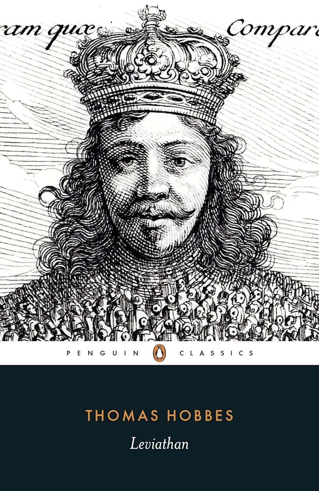
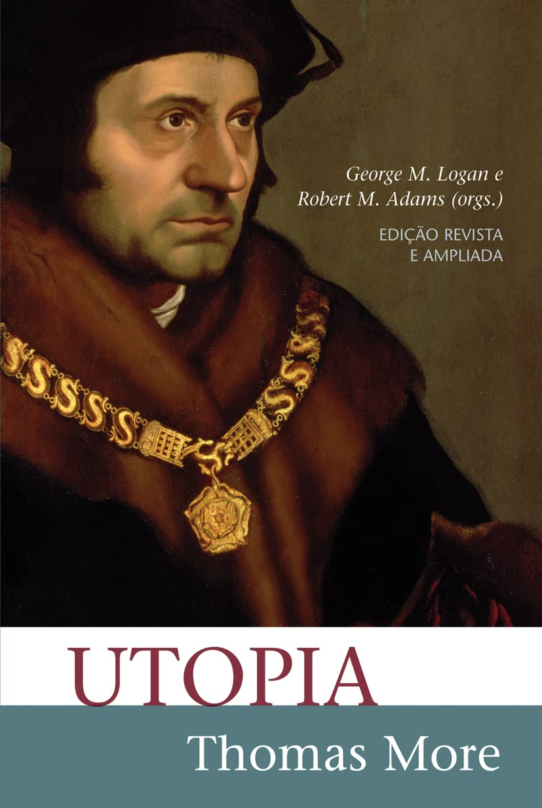
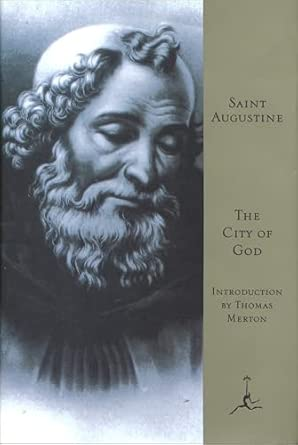
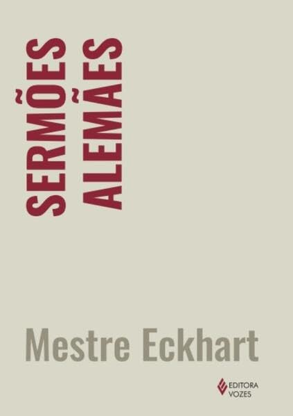
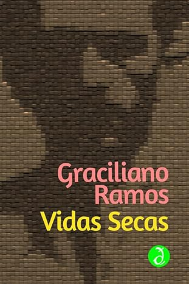
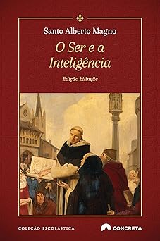

Leviatã
Thomas Hobbes
Filosofia“Que o ensino conduza à libertação do espírito pela razão sobre os conhecimentos adquiridos.”- Jacques Maritain Explorar obras
Obras que trasformam.

Thomas Hobbes
Filosofia
Thomas More
Literatura
Santo Agostinho
Teologia
Mestre Eckhart
Teologia
Graciliano Ramos
Literatura
Santo Alberto Magno
FilosofiaA sabedoria, o caminho para a verdade.
A narrativa que revela a alma.
A estrutura divina do Ser.
Obras que atravessam gerações.
Aristóteles
Santo Tomás de Aquino
René Descartes
Friedrich Nietzsche